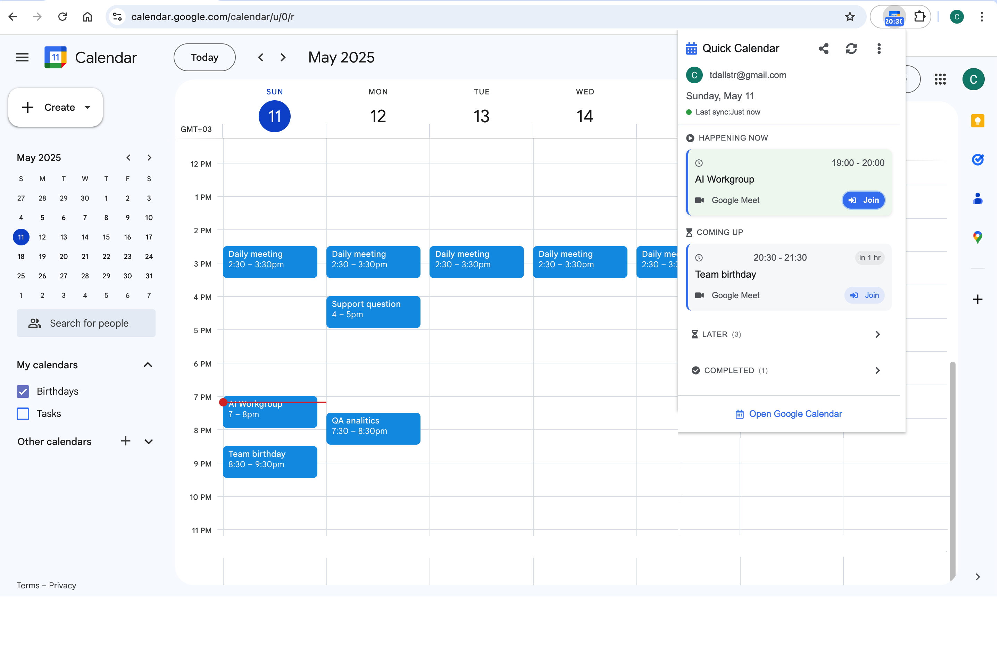

Why Separate Calendars in One Account Works
Google Calendar supports multiple calendars within one account. Using separate calendars for work and personal life — rather than one combined calendar — gives you control over visibility (sharing work without exposing personal events), color-coding (immediately distinguishing event types), and notification settings (different defaults per calendar).
You do not need separate Google accounts. In most cases, two calendars within one account (or two accounts viewed simultaneously in one Google Calendar interface) is the most practical setup.
A Simple Two-Calendar Structure
- Work calendar: all professional commitments, shared at 'See all event details' with your team.
- Personal calendar: family, health, social, and personal events, shared at 'free/busy' or not shared.
- Optional third calendar: side projects, freelance, or a specific major life event currently in progress.
- Color-code work blue or green, personal in warm tones — make the visual distinction clear at a glance.
What to Put Where
The most common confusion is where hybrid events go — a doctor's appointment during work hours, a family dinner that affects work availability, a conference that mixes professional and social elements. The practical rule: if the event affects your work availability, it goes on the work calendar. If it is private and does not affect scheduling with colleagues, it goes on the personal calendar.
A doctor's appointment during work hours belongs on the work calendar as a blocked busy event — not because it is professional, but because it affects your work availability. Your colleagues do not need to see the title, but they do need to know you are unavailable.
Avoiding Calendar Bleed
Calendar bleed — when work encroaches on personal time and vice versa — is often a calendar visibility problem. If your work schedule is opaque, colleagues schedule into your personal time by accident. If your personal calendar is invisible, you do not see the conflict until the day of. Making both calendars visible to yourself at all times, and setting clear sharing levels for others, reduces this friction significantly.
How Schedule Calendar helps
Schedule Calendar displays events from all your Google Calendar calendars in the toolbar popup — work and personal events together in one chronological list. This means a glance at the extension shows your complete picture: the afternoon meeting and the kids' pickup in the same view. You do not need to toggle between calendars to know how your full day is structured.
Frequently asked questions
For most people, separate calendars within one account (or viewing two accounts simultaneously) is easier to manage than fully separate Google accounts. Google Calendar allows you to add multiple Google accounts and view their calendars side by side. Separate accounts make sense if your work uses a managed Google Workspace account that has different access requirements from your personal account.
Keep work events on a separate Work calendar and personal events on a separate Personal calendar. Share the Work calendar at 'See all event details' with your team. Keep the Personal calendar at 'free/busy only' or do not share it. This way, colleagues see your work commitments in full while personal events appear as availability blocks without detail.
Put events that affect your work availability on your work calendar, even if they are personal. A doctor's appointment blocks a two-hour window that your colleagues should not schedule over. Add it to the work calendar as a private or simply titled event like 'Personal appointment.' Your personal calendar can have the full details if needed for your own reference.
In Google Calendar, both calendars appear in the left sidebar and overlay in the main calendar view simultaneously. Each calendar has its own color, so events are visually distinguishable. If your work calendar is on a different Google account, you can add that account to your personal Google Calendar interface by going to Settings > Add other people's calendars or by signing into multiple accounts.
Keep the system simple and consistent: one distinct color for work events, one for personal events. Many people use blue or green for work and red or orange for personal, or vice versa. The specific colors matter less than the contrast between them — you should be able to scan the week view and instantly understand the ratio of work to personal time without reading event titles.
Add personal commitments to a calendar that is visible to colleagues — either on your work calendar as blocked time, or on a shared personal calendar at free/busy level. If your personal events are only on a calendar that colleagues cannot see, they have no way of knowing those windows are unavailable. Visibility is the prerequisite for protection.